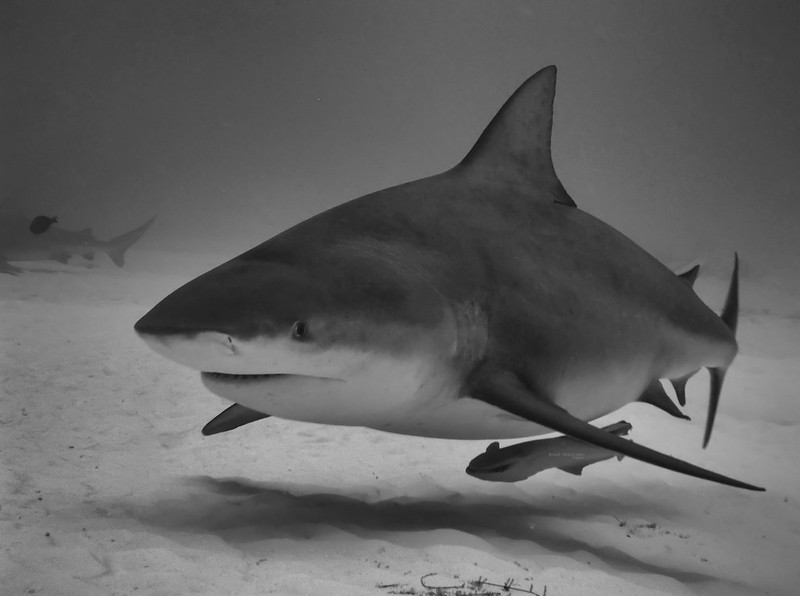
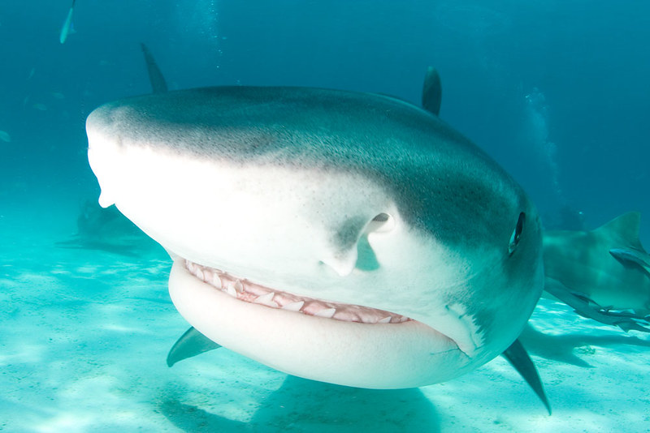
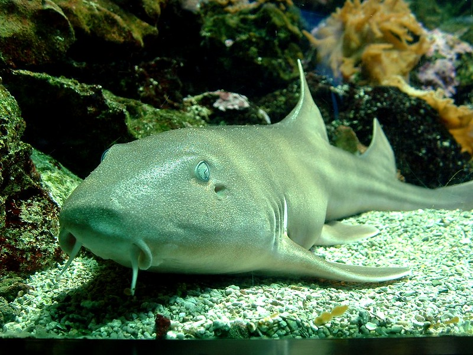
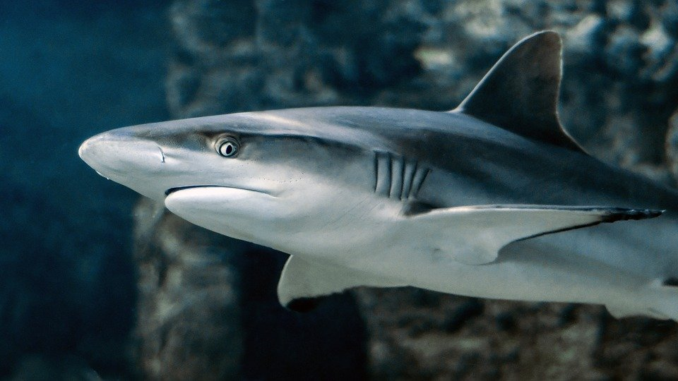
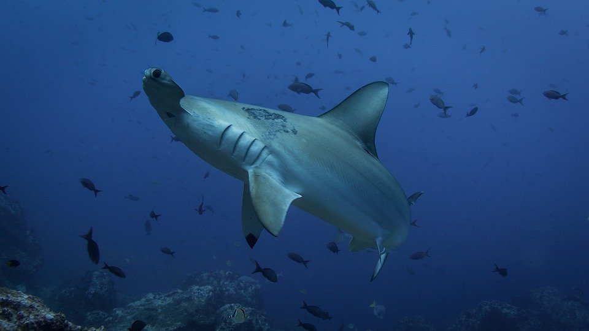
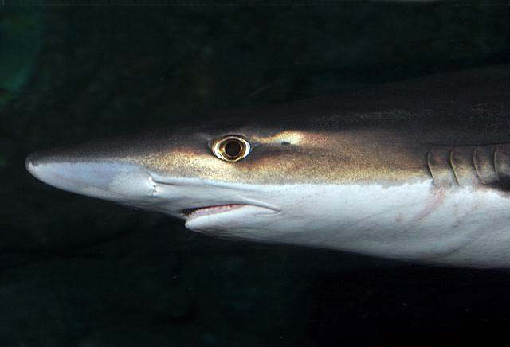
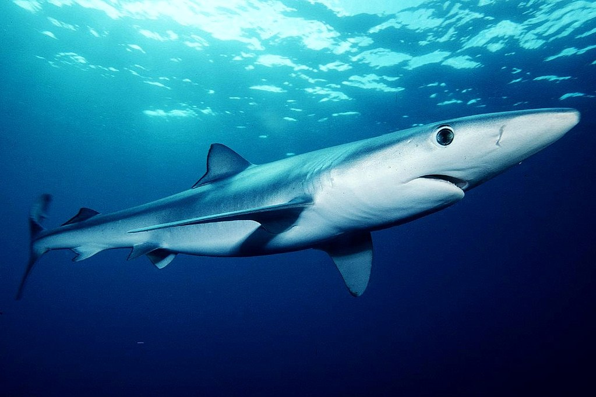

VOLVER
ORDEN
CARCHARHINIFORMES
tiburón toro
carcharhinus leucas
Derechos de atribución de fotografías
author-page-licence
WIlly Volk
Foter.com
CC BY-NC-SA

Tiburón sardá ó tiburón toro es su nombre común , no confundir con tiburón toro bacota (Carcharias taurus), mucho menos agresivo y con habitos y hábitat distintos. Tiene más testosterona que un elefante macho adulto en celo,y suele habitar zonas costeras ,donde comparte espacio con bañistas ,aunque estos no lo vean. Ha habido multiples ataques en costas cálidas. Tiene la mordida más potente de todos los tiburones siendo de más de 600 kg para un ejemplar adulto distintos. La película mítica 'tiburón' se inspiró en una semana de ataques en rios del interior y en la costa erroneamente atribuidos a el tiburón blanco .Mas tarde se descubrió que este tiburón es el único que puede remontar rios , se han llegado a encontrar a más de 3000 km de la costa remontando rios por la selva amazonica y también en África. Donde se le conoce por tiburón Zambeze por merodear por sus aguas. Su alimentación se basa en peces, cocodrilos, delfines y otros tiburones. Se encuentra en todos los mares cálidos a excepción del mediterraneo,África, sudamerica desde baja California hasta perú.
tiburón tigre
galeocerdo cuvier
Derechos de atribución de fotografías
author-page-licence
NLM - FOTOS
Foter.com
CC BY-NC-ND

Los basureros del oceano tambien se les llama, dentro de sus estómagos se han llegado a encotrar matrículas ,ruedas y todo tipo de desperdicios.Depredador y carroñero .Dentro de su dieta ,se encuentran otros tiburones,delfines,leones márinos,focas,aves,tortugas , y prácticamente de todo.Esta encuadrado dentro de las 4 especies más peligrosas del mundo, o que han protagonizado ataques sin provacación aparente.Tiburon blanco,tiburón toro o sardá ,tiburón marrajo o mako y tiburón tigre. Tiburón oceanico de puntas blancas podría entrar en esta lista pero debido a su carácter pelágico ,no interacciona apenas con humanos.
pintarroja
scyliorhinus canicula
Derechos de atribución de fotografías
author-page-licence
Brook-Ward
Foter.com
CC BY-NC

Vive sobre fondos arenosos desde los veinte hasta los 400 m de profundidad, siendo más abundante entre los 150 y los 300 m. Se alimenta de crustáceos, moluscos y cefalópodos marinos.Principalmente en el Mediterráneo ,también en el Atlántico.Es capturado por accidente por los arrastreros, su valor comercial no es alto .En España, Málaga es apreciado en cocina.
tiburón gris
carcharhinus amblyrhynchos

Es uno de los tiburones más comunes en el Pacífico .También en costas coralinas cerca de íslas. Como su nombre indica , es mayoritariamente de color gris pueden llegar a medir cerca de los tres metros, pero no es lo habitual. Han atacado a personas , aún así no es una espécie que se carácterize por ello.
tiburón martillo
sphyrna mokarran

Su principal carácteristica , es la particular forma de T de su cabeza, lo que le capacita de un gran angulo de visión , aunque es limitado en el plano central .Habita , en Florida, mar de China y en todo el índico . También en algunos puntos del sur de africa. Esta en peligro de extinción por lo demandadas que són sus aletas.Está especie es la más grande de los tiburones martillo , hay otras especies más pequeñas y que se mueven en grandes bancos. El gran tiburón martillo suele encontrarse en solitario. Su alimentacion ,peces, calamares , rayas y crustáceos.
cazón
galeorhinus galeus

Cazón o tiburon vitamínico , suele llegar a medir dos metros y pesar unos 45 kg .Viven en fondos hasta casi los 100 m de profundidad. Se encuentra en mares templados como el mediterráneo ,sudamerica y california . Su carne es muy apreciada en Andalucia (España), donde se suele cocinar , en adobo , además de en las Islas Canarias donde también se consume.Se encuentra sobreexplotado por causa de su carne , aletas e hígado.
tiburón azlul
prionace glauca

De cuerpo estilizado es el más elegante de todos los tiburones. Se alimenta principalmente de peces,calamares,aves,bonitos. Se encuentra tanto en mar abierto como en zonas costeras.Su carne no es muy apreciada y hay informes en los que se ha encontrado una gran cantidad de metales pesados en su carne como mercurio y plomo.Rara vez muerden , en 440 años desde que se conoce esta especie solo han provocado 4 muertes en unas 15 incidencias de mordeduras.
tiburón lanza
glyphis plyphis
Derechos de atribución de fotografías
author-page-licence
Bill Harrison
Wikimedia Commons
CC BY 2.0
Tiburón de agua dulce, se han visto apenas dos ejemplares y fué descubierto a mediados de los años 80. Es un tiburón muy misterioso. Su nombre viene de sus dientes afilados en forma de lanza. Es confundido con el tiburón toro o sardá lo que es un gran error,aunque su color sea parecido y los dos habiten en agua dulce no tienen nada que ver.Este es un tiburón muy tímido. No se deja ver con facilidad cuando se ha intentado estudiar y en toda la red a nivel mundial hay un par de fotos solamente.
VOLVER